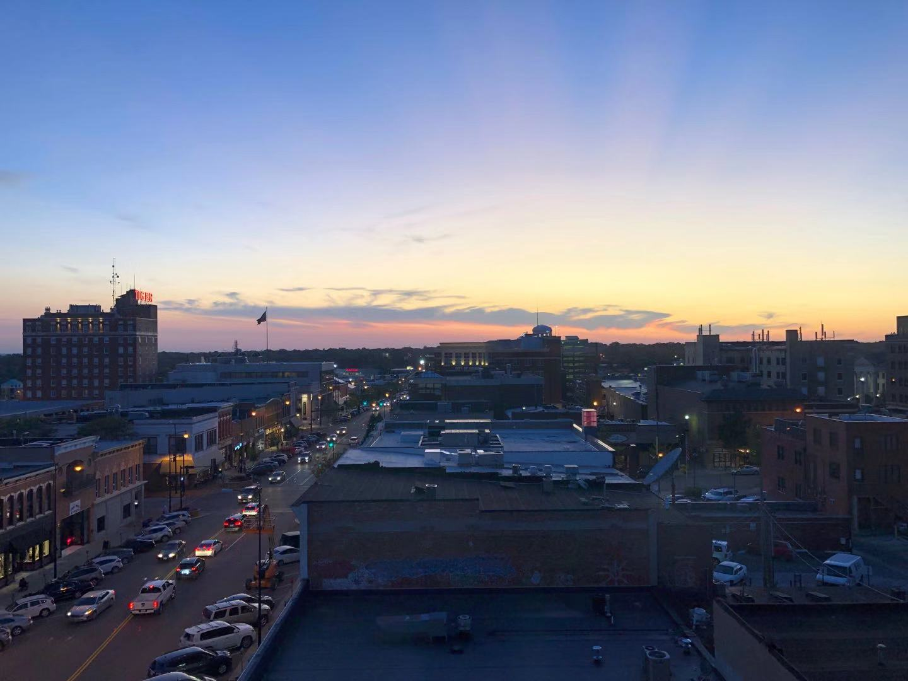
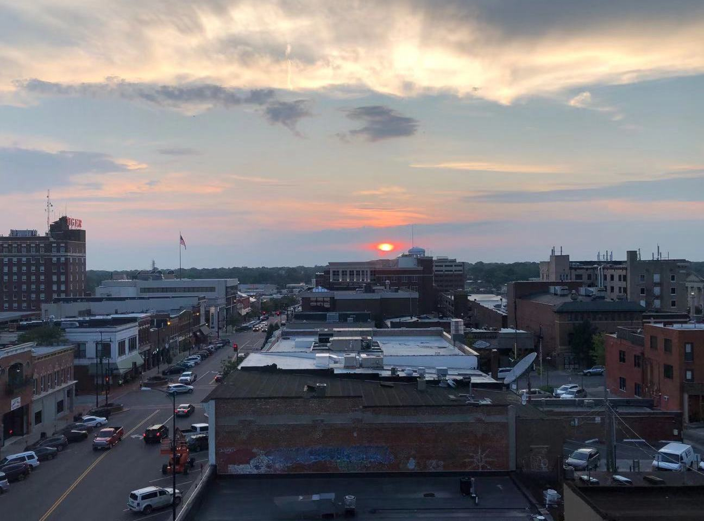

Top Stories
- 
- 
CoMO Life
Photographer: Taoru Huang
Here is for advertisement.Here is for advertisement.Here is for advertisement.Here is for advertisement.
Galleries
Jiangnan

August_2017. Khotan Xin Jiang. Uyghur senior cooking. Boyuan Zhang/Alexia Foundation
Photographer: Qinghui Kong
Drift in Downtown Columbia

State Historical Society of Missouri Center, October 5, 2019.
Photographer: Qinghui Kong
Them After School

Sunlights shine on an apartment's door at Grindstone Canyan, Columbia. October 5, 2019.
Photographer: Qinghui Kong
Morocco

Capations go here.
Photographer:Zhuoxiu Xing